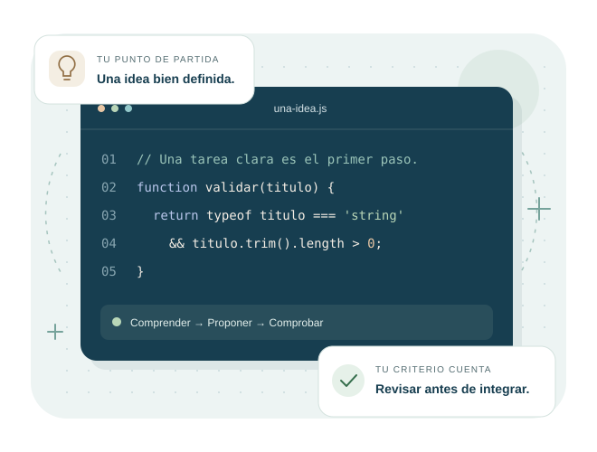

Las ideas esenciales.
Inteligencia artificial, aprendizaje automático y modelos de lenguaje. Un punto de partida para comprender cómo se conectan.
Leer los fundamentosInteligencia artificial y software
Comprende cómo la inteligencia artificial puede acompañarte al crear software. Explora sus posibilidades y aprende a revisar cada propuesta con criterio.
Probar el validador de títulos
Conceptos claros Ejemplos prácticos Uso responsable

El punto de partida
Desarrollar software requiere comprender un problema, proponer una solución y comprobar que funciona. La IA puede aportar sugerencias durante ese proceso.
Conocer sus posibilidades y limitaciones te ayuda a decidir cuándo utilizarla, qué información compartir y cómo evaluar el resultado.
Explora el contenido
Empieza por los conceptos y avanza hacia una forma consciente de trabajar con IA.
Inteligencia artificial, aprendizaje automático y modelos de lenguaje. Un punto de partida para comprender cómo se conectan.
Leer los fundamentosDescubre cómo la IA puede apoyar la programación, las pruebas, la documentación y la mejora del código.
Conoce los beneficios y los riesgos que conviene considerar antes de integrar una propuesta a tu trabajo.
Conocer beneficios y riesgosAprende a plantear una tarea, revisar las respuestas y cuidar la información que compartes con una herramienta.
Leer las buenas prácticasDetrás del proyecto
Conoce al creador de este espacio y el propósito del sitio.